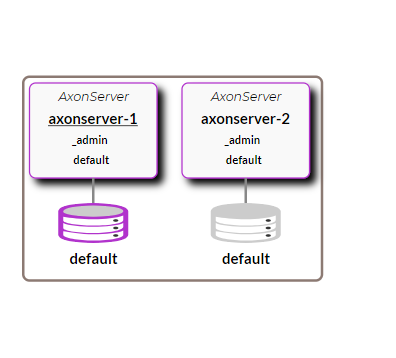

Axon Server
Unified Axon Server Artifact
In an effort to simplify the deployment process, since 2023.1 version we’ve updated Axon Server to release a single artifact, replacing the previously separate artifacts for the Standard and Enterprise edition. Depending on the presence of a license, Axon Server will now automatically adjust.
Binaries
The Axon Server ZIP download contains executable JAR files for the server itself and the CLI. In addition to the archive file, you would also need a license to run it.
Setting up Axon Server
You may run Axon Server in a variety of ways. The following sections will guide you through the process of setting up Axon Server in a variety of ways. Before we get into the setup, a short introduction to the concept of clusters and contexts within Axon Server.
Non-clustered
A single Axon Server node will provide a single connection point for (Axon Framework-based) client applications.
This node will manage message delivery and event storage.
To run Axon Server in a non-clustered mode with initialized context, you can simply add these properties to the axonserver.properties or add them as environment properties.
axoniq.axonserver.standalone=trueAnother way to initialize a context is to use the Axon Server UI, CLI, or Cluster template.
Clustered
A cluster of Axon Server nodes will provide multiple connection points for (Axon Framework-based) client applications, and thus share the load of managing message delivery and event storage. Client applications will dynamically connect to a node in the cluster and automatically reconnect to another, should the node that they are currently connected to become unreachable.‌ This ensures a highly available deployment.
Within a single cluster you can define *contexts*. Contexts are comparable to logical databases in a RDBMS. They allow for strong separation without requiring deploying and managing full instances. They may be used for "bounded contexts" in the DDD sense, multi-tenancy (with a context per tenant), and have different retention policies.
The Clustering and Contexts sections provide more insights into these aspects.
Cluster setup
Setting up a cluster generally involves three steps:
-
Provision "uninitialized" Axon Server nodes
-
Admin Node initialization
-
Add additional nodes to the cluster.
Provision Axon Server nodes
To get started with setting up a cluster, you need to provision a set of *uninitialized* nodes. Extract the Zip on all the nodes that you want to be part of the cluster. The nodes will need to run on separate ports if run on the same machine.
From the location where the files have been extracted, please run the following command.
$ ./axonserver.jar
_ ____
/ \ __ _____ _ __ / ___| ___ _ ____ _____ _ __
/ _ \ \ \/ / _ \| '_ \\___ \ / _ \ '__\ \ / / _ \ '__|
/ ___ \ > < (_) | | | |___) | __/ | \ V / __/ |
/_/ \_\/_/\_\___/|_| |_|____/ \___|_| \_/ \___|_|
Powered by AxonIQThis will start Axon Server using the default ports - 8024 for HTTP / 8124 and 8224 for gRPC
The HTTP port is used to serve the Management UI and the REST API provided by Axon Server. The gRPC 8124 port is used by Axon Framework client applications to connect to Axon Server, while the gRPC 8224 port is used for internal communication between the nodes of an Axon Server cluster.
The management UI can be opened at "http://localhost:8024" while the REST API is accessible at "http://localhost:8024/v1". The REST API provides an operation at "/v1/public/me" to get the configuration details for a running instance of Axon Server.
A representation of the response is given below.
{
"authentication": false,
"clustered": true,
"ssl": false,
"adminNode": false,
"developmentMode": false,
"storageContextNames": [],
"contextNames": [],
"internalHostName": ${hostname},
"grpcInternalPort": 8224,
"grpcPort": 8124,
"httpPort": 8024,
"name": ${hostname},
"hostName": ${hostname}
}Repeat this for every node that needs to be a part of the cluster.
To summarize,
-
Extract the Axon Server zip (along with the license file) on each node which needs to be part of the cluster and start each instance.
-
Ensure that the gRPC / internal gRPC ports are open and accessible between the various nodes.
-
The REST API call to each node at "/v1/public/me" gives you the configuration details of the running Axon Server instance. This configuration can be customized using the system properties file
axonserver.propertieslocated within the Axon Server distributable. The System Properties section details these values.
This completes the process of setting up the uninitialized nodes. Next, we need to initialize one of the nodes as the "Admin Node"
Admin node initialization
To convert a group of uninitialized Axon Server nodes into a cluster, you need to select any one of them as a starting point and run the “init-cluster” command on it. This is done using the "command-line" utility (axonserver-cli.jar) available as part of the Axon Server distributable.
$ ./axonserver-cli.jar init-clusterOnce successfully executed, this will do the following,
-
Designate this node as the admin node of the Axon Server cluster
-
Creates the "admin" context which stores the configuration details of the Axon Server cluster
-
Creates a "default" context which is available for event storage/message routing for client applications
The REST API operation at "/v1/public/me" should now show the following response (assuming axonserver-0 as the hostname of the admin node)
{
"authentication": false,
"clustered": true,
"ssl": false,
"adminNode": true,
"developmentMode": false,
"storageContextNames": [ "default" ],
"contextNames": [ "_admin", "default" ],
"name": "axonserver-1",
"hostName": "axonserver-1",
"internalHostName": "axonserver-1",
"grpcInternalPort": 8224,
"grpcPort": 8124,
"httpPort": 8024
}All admin nodes are member of the “_admin” context, and it is used to distribute cluster structure data in the same way as it distributes Events, Commands, and Queries.
The UI console displays the newly initialized admin node as shown below (assuming axonserver-1 as the name of the node)

Additional nodes
The other nodes can be added to the cluster using the “register-node” command, pointing it at an admin node already in the cluster. On every other node, the following command needs to be executed by pointing to the admin node created above.
$ ./axonserver-cli.jar register-node -h axonserver-1Assuming that the additional node being added has its hostname as "axonserver-2", if the REST API operation at "/v1/public/me" is run against the second node, the following response is shown.
{
"authentication": false,
"clustered": true,
"ssl": false,
"adminNode": true,
"developmentMode": false,
"storageContextNames": [ "default" ],
"contextNames": [ "_admin", "default" ],
"name": "axonserver-2",
"hostName": "axonserver-2",
"internalHostName": "axonserver-2",
"grpcInternalPort": 8224,
"grpcPort": 8124,
"httpPort": 8024
}To get the complete details of the cluster configuration, the REST API operation at "/v1/public/context" if run against the admin node.
A sample response is shown below (assuming that the hostnames of the admin node and the additional node are "axonserver-1" and "axonserver-2")
[
{
"metaData": {},
"nodes": ["axonserver-1", "axonserver-2"],
"leader": "axonserver-1",
"pendingSince": 0,
"changePending": false,
"roles": [
{ "role": "PRIMARY", "node": "axonserver-1" },
{ "role": "PRIMARY", "node": "axonserver-2" }
],
"context": "_admin"
},
{
"metaData": {},
"nodes": ["axonserver-1", "axonserver-2"],
"leader": "axonserver-1",
"pendingSince": 0,
"changePending": false,
"roles": [
{ "role": "PRIMARY", "node": "axonserver-1" },
{ "role": "PRIMARY", "node": "axonserver-2" }
],
"context": "default"
}
]The cluster configuration information depicts:
-
The leader of the cluster
-
The contexts available within the cluster (in this case "_admin" and "default")
-
The nodes within the a cluster
-
The roles that the nodes play within a specific context (in this case PRIMARY)
The UI console displays the newly initialized admin node as shown below (assuming axonserver-1 as the name of the node)

A production grade setup would require more advanced configuration. For example an Axon Server node can be assigned to play different roles within a cluster - it may serve as an admin node, providing services to configure the cluster and keep it running, next to the “regular” event store and messaging functions. It can also be configured to only service specific *contexts* in various roles. Contexts are comparable to logical databases in a RDBMS. They allow for strong separation without requiring deploying and managing full instances.
This is detailed in the Clustering and the Contexts sections.
This completes a quick basic setup of an Axon Server cluster using the default configurations.
To summarize,
-
_*The Axon Server is not available for event storage or message routing unless a cluster is setup.
-
By default, access control and SSL is not enabled.
-
The basic setup involves the creation of an Axon Server cluster - This involves configuring an Admin Node and registering additional nodes to the cluster.
-
The default ports are 8024/8124 and 8224. These values can be changed via configuration.
-
The name and hostname default to the hostname of the system Axon Server is running on. These values can be changed via configuration ( “axoniq.axonserver.name” / “axoniq.axonserver.hostname”).
-
The "internalHostName" and "grpcInternalPort" are used for internal communication between the nodes of an Axon Server cluster. These values can be changed via configuration.
Auto-clustering
A new feature available since 4.3 is that you can use configuration setting “axoniq.axonserver.autocluster.first” (in the axonserver.properties file) to provide it with the hostname of a known Admin node. If that name happens to be the hostname of the node starting up, it will automatically perform the “init-cluster” command on itself if needed. If the name is not the current hostname, it will schedule a task to perform the “register-node” command, which will keep trying until successful, which is when the first node is itself available and initialized. In addition if needed, you can use the “axoniq.axonserver.autocluster.contexts” setting to provide a comma-separated list of contexts to create or join. (The “_admin” context needs to be explicitly added if you want all nodes to become admin nodes.)
Storage
Axon Server creates a folder for each context under a directory named “data”. This is where the events and snapshots for the contexts will be stored. The location can be customized using the “axoniq.axonserver.event.storage” and “axoniq.axonserver.snapshot.storage” settings. Do note that the location customization is applicable for all contexts, you cannot customize it for a specific context.
Axon Server will also create a folder for each context under a directory named "log". This is where the replication log for each context is stored. The replication log stores context data as it comes in and is distributed. The storage location for the replication log can be adjusted using the “axoniq.axonserver.replication.log-storage-folder” property. Again, this is applicable for all contexts.
There is also a small database in the “data” directory, which is referred to as the “ControlDB”, and is used for administrative data. This location you can customize by using the “axoniq.axonserver.controldb-path” setting.
The configuration section details the steps required to setup the storage required for Axon Server including some advanced options.
Access Control
As Axon Server is an event store and may contain sensitive data it is always a good practice to enable access control in production and production-like environments.
The Access Control section details the steps required to set up access control in Axon Server.
SSL
Axon Server supports TLS/SSL (Transport Layer Security/Secure Sockets Layer) to encrypt all of Axon Server SE’s network traffic - From Axon Framework client applications to Axon Server as well as between the various nodes of an Axon Server EE cluster.
The SSL section details the steps required to setup SSL in Axon Server.